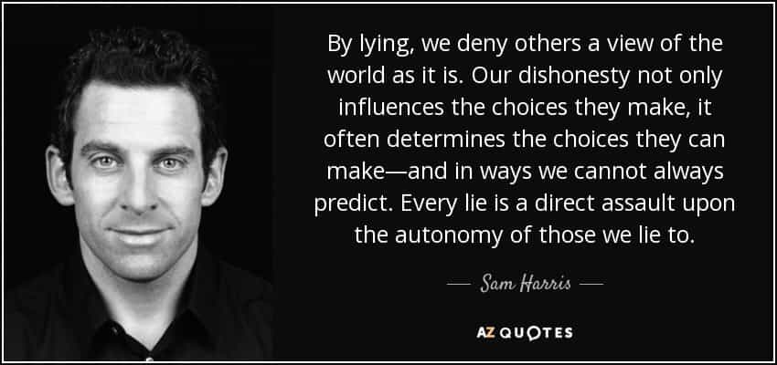

Edgar Tru is a Southern-based objectivist, natural-minded contrarian, and eleutheromania. Follow me on Gab.


The West is dying. And there have been many warning signs, rational literature, and wise men who saw the impending cancer before it took on its full form. To help make sense of this decline, I recommend the following five books.
Ann Coulter was the woman laughed at on Bill Maher’s HBO show when she predicted Donald Trump would win the general election. It is clear she had wisdom not held by her co-guest that night as she saw something beyond their recognition. And, like that glorious prediction, we can see the wisdom in her book.
It tackles immigration in regards to Mexico. It edges into race-based territory and recognizes that demographic changes of such a large scale have severe consequences and overall effect on the culture which allows them in. She addresses crime and gangs, the butchery and rape of US citizens, how the environment and our nature parks are destroyed and littered upon, along with quite a few packed in horror stories which, after awhile, begins to feel like being dragged in a pit of nails whilst realizing how much closer it gets to your own doorstep.
One thing we can certainly take away is that European-based majority countries suffer in terms of safety and security when third-world folk are allowed in as if they stand on equal grounds with Europeans. Then again, one must ponder if the ones who allow their own citizens to be replaced, bashed on through the dominant pop culture while screaming they’re the issue, are perhaps the lesser ones while the ignorant savage beast is the more noble one by Nature’s standards.
Jared Taylor seems a gentleman worth conversing with over some coffee or a nice glass of whiskey. He’s been advocating on behalf of European-Americans for quite some years, and still going strong today. He has, in part, helped bring to light that, yes, it is okay to be (hu)white and that European folk have their fears, interest and preferences. He operates American Renaissance and has produced some very well-worded, well-thought out video content addressing issues in regards to race and how they play a serious role in our lives, our society, our culture.
Whether one is of European heritage or otherwise, this book is a damn good read and written in a fashion anyone with an open mind, and mind of honesty, can read and evaluate without feeling Mr. Taylor’s allowing his emotions to slip in and craft his reality.
This book addresses the ethnic conundrums in places which are more diverse than others, including the clash between blacks and Hispanics in schools and jails out in California. Important factors such as racial tribalism amongst non-whites, and advocacy groups like La Raza, hit hard the impending shift which is surely to occur in America and where European-Americans shall be replaced. It seems highly plausible we’d be a very hated minority.
The book is fueled by facts and stats, accompanied with news stories which display the raw reality many Westerners seem to ignore with such dangerous ignorance.

Myself, I find lying repulsive. I’m not sure why I’ve come to put such an emphasis on this value. And I’ve tried examining my psychology as well. The best I can garner is that I’m an objectivist and I prefer things as they are. To see the world as it is, not as I want or feel it should be. I’ve been around ruthless liars and manipulators to the point reality was smashed together with the fiction eroding from their devil-it tongue. I’m just not a fan.
I quite like Sam Harris. He seems a gentleman I’d enjoy being indulged in with good chat and intellectual stimulation. We most certainly have our opposing views — like his opposition toward pro-white politics — but I still appreciate the man nonetheless.
This particular book is quite short and can be easily read in a day. He clearly values honesty, which seems lost in much of American culture. Everyone from celebrities, to politicians, to greed-bent globalist pastors, to your everyday encounters. I fucking hate it. Even when engaging in chat with everyday folk am I questioning their words and intentions in my mind. I do not trust people.
From telling your wife how she really looks in that dress, to weighing the deceit of lying by omission, this book is a short and sweet piece of literature that I’m glad to have purchased. The amount of deceit plaguing the West (particularly America) is astonishingly gross and could use some fixing up.
It’s been around since 1889. And it is a book that must be mentioned because it lays bare, as I see it, a very open and honest worldview. In a sentence, morality is wherever your ethics leads you. Not the most appealing to the brainwashed West-bound liberal dwellings of today, but it holds weight.
As I read through this for the first time, I had to ask myself, quite a few times if, I was being pranked. How is it this mysterious Ragnar Redbeard could foresee the decline of the West with seemingly ease? It is perhaps obvious now that he was a man simply unfit for certain propaganda aimed to distort his reality and saw Nature as She is, for who She is. And it’s that simple.
It touched on the dangers of female-led societies, the ills of humanitarianism and spreading your care beyond your borders, the hippie-esque version of Jesus Christ and the equality-for-all mentality, the weakening of city men compared to men of the country, etc.
It is truly a fantastic read and is very accurate. And our Mr. Redbeard saw straight through the bullshit, and now, about 130 years later, we lay witness to the tragic and natural collide of cultures when one is weak enough to allow the other to stomp their backs in.
Literature can hold such wisdom and mold the mind in ways far more positive than one could ever foresee. These books are only a sample of the raw piss-and-grit truths of our world divulged by means of literature. They are brutal and they are honest. I’d highly recommend them.